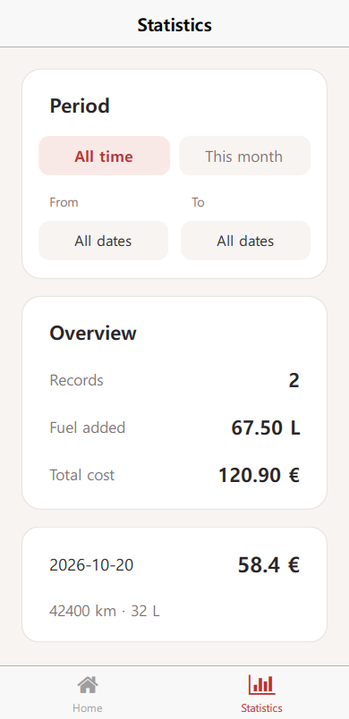
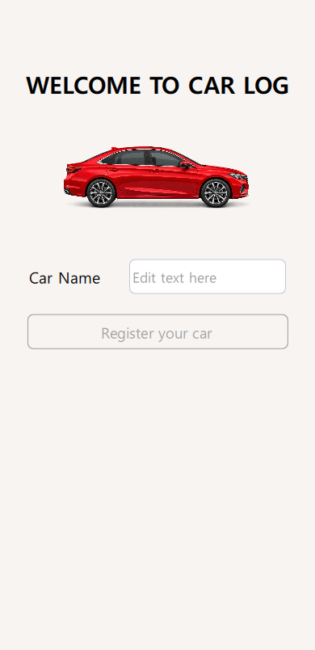
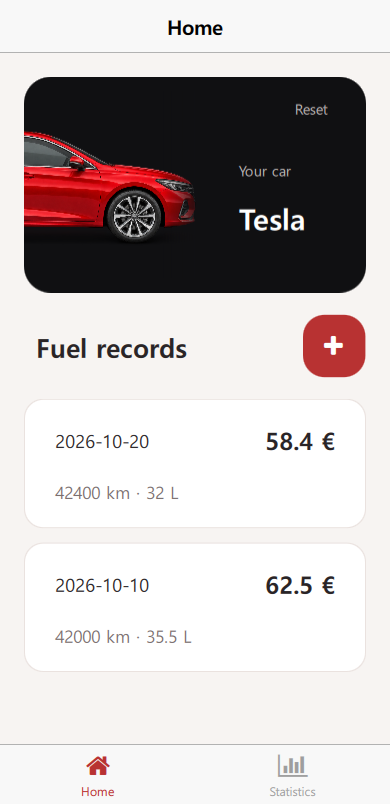
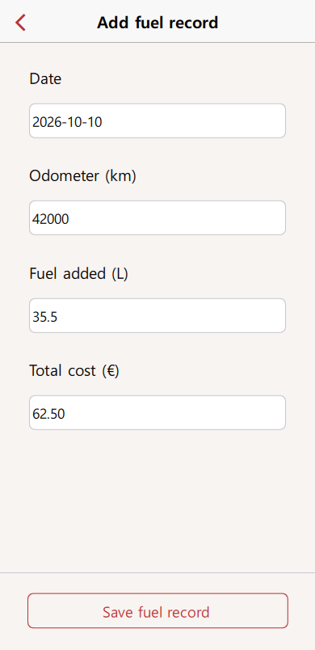

How much have you spent on fuel this month? Build CarLog with Felgo and QML to register a car, keep its fuel records, and compare spending by date.



What you will build
You will connect the app's data model, build the onboarding controls, create a reusable record list and fuel form, and add validation and storage. The last steps calculate period totals and connect the circular page transition.
Use Felgo with Qt 6.8.3. This guide assumes basic QML properties, signals, layouts, and JavaScript functions. It starts with a runnable app shell: the theme, vehicle card, date picker, navigation container, and animation components are supplied. We will build the fields, list delegate, and behavior that make those pieces work together.
Download the starter project and unzip it into a new folder. Use the completed project to check your work.
When changing a function or component below, replace its existing version. Keep the supplied imports, IDs, and surrounding layout unless the step says to change them: other bindings refer to those names.
1. Connect the app's data model
A button, a saved value, and a page transition have different jobs. CarLog separates them so the same records can appear on both tabs:
| File | Responsibility |
|---|---|
| qml/Main.qml | Owns Storage, Logic, DataModel, and the single NavigationStack. |
| qml/logic/Logic.qml | Declares the actions a page can request. |
| qml/model/DataModel.qml | Validates changes, writes Storage, and exposes values to the pages. |
| qml/pages/ | Collects input and displays model properties; requests actions through signals. |
Open Logic.qml. Its signals name the actions the app understands:
import QtQuick Item { signal onboardingFinished(string carName) signal onboardingReset() signal addFuelRecord(var draft) signal updateFuelRecord(var recordId, var draft) signal deleteFuelRecord(var recordId) }
Signals do not save anything by themselves. DataModel listens to this Logic object through its dispatcher property. In Main.qml, replace the DataModel instance with:
DataModel { id: dataModel dispatcher: logic // data model handles actions sent by logic }
For example, the form will call logic.addFuelRecord(draft). DataModel's matching onAddFuelRecord handler will process the draft. When the model assigns a new fuelRecords array, the lists bound to that property update. The page does not need to reload its list manually.
Main creates these shared objects above the pages, making their IDs available in the pages' QML creation context. Keep storage, logic, and dataModel in Main; do not create another Storage object inside each page. The downloads already give Storage its own tutorial database.
Run the app. The welcome heading and car should appear. There is no name field yet. In the next step, we will give that screen something to submit.
2. Build the car registration controls
In qml/pages/OnboardingPage.qml, add this code below the car image, inside the Column:
RowLayout {
width: parent.width
spacing: dp(10)
StyledText {
text: "Car Name"
}
StyledTextField {
id: carNameField
Layout.fillWidth: true
backgroundColor: Design.inputBackgroundColor
placeholderText: "Edit text here"
width: dp(200)
}
}
StyledButton {
width: parent.width
text: qsTr("Register your car")
enabled: carNameField.text.trim().length > 0
onClicked: root.onboardingFinished(carNameField.text.trim())
}
RowLayout places the label beside the field; Layout.fillWidth lets the field use the remaining width. The enabled binding follows the trimmed input, so the button stays disabled for an empty name or spaces. Pressing it emits onboardingFinished. Main forwards that request to Logic, and the model changes onboardingCompleted to open Home.
Try spaces, then enter Tesla and press Register your car. Home should open. This first version only keeps registration in memory. Restart the app to return to onboarding before continuing.


3. Keep the car name after a restart
In qml/model/DataModel.qml, update completeOnboarding(name):
function completeOnboarding(name) { const trimmedName = name.trim() if (trimmedName.length === 0) return false storage.setValue("carName", trimmedName) storage.setValue("onboardingCompleted", true) root.carName = trimmedName root.onboardingCompleted = true return true }
Save the name and flag before changing onboardingCompleted in memory. Main listens to that property to decide when to open MainPage. Updating it last means the next screen sees the registered name.
In the same file, update prepare() to restore the saved state:
function prepare() { carName = storage.getValue("carName") || "" onboardingCompleted = !!storage.getValue("onboardingCompleted") loadFuelRecords() }
prepare() runs when the model is created. Main waits for Felgo's launch screen to finish, opens onboarding, and also opens MainPage if registration was restored. One NavigationStack owns that history. Home and Statistics are tabs inside MainPage, not separate stacks. The supplied loadFuelRecords() reads the saved array, treats a missing key as an empty list, and puts read errors in fuelRecordsError for the list to display.
Register Tesla, restart the app, and check that Home still shows Tesla. Tap Reset: it clears registration and all fuel records and returns to onboarding. Register Tesla again to continue on Home.
4. Build a reusable fuel-record list
Home and Statistics need the same cards, empty message, and error display. qml/components/FuelRecordsList.qml already has the outer layout and status messages. Its records property is the input; recordClicked is the output. The ListView inside it has no delegate yet, so it cannot draw a record.
Replace that ListView with:
ListView { id: recordsView anchors.fill: parent clip: true spacing: dp(12) model: root.records delegate: Item { id: recordItem width: recordsView.width height: recordContent.implicitHeight + dp(32) // Stagger the first visible cards without delaying long lists. readonly property real cardProgress: root.entranceAnimation ? root.entranceAnimation.progressForCard(index + 2) : 1 Rectangle { anchors.fill: parent radius: dp(16) color: recordMouse.pressed ? Theme.listItem.selectedBackgroundColor : Theme.listItem.backgroundColor border.color: Theme.listItem.dividerColor border.width: px(1) opacity: recordItem.cardProgress transform: Translate { y: (1 - recordItem.cardProgress) * dp(64) } MouseArea { id: recordMouse anchors.fill: parent cursorShape: Qt.PointingHandCursor enabled: root.editable onClicked: root.recordClicked(modelData) } ColumnLayout { id: recordContent anchors.left: parent.left anchors.right: parent.right anchors.top: parent.top anchors.margins: dp(16) spacing: dp(10) RowLayout { Layout.fillWidth: true spacing: dp(12) StyledText { Layout.fillWidth: true text: modelData.date color: Theme.listItem.textColor font.pixelSize: sp(15) font.weight: Font.Medium elide: Text.ElideRight } StyledText { Layout.maximumWidth: recordContent.width * 0.5 text: modelData.totalCost + " €" color: Theme.listItem.textColor horizontalAlignment: Text.AlignRight font.pixelSize: sp(20) font.weight: Font.DemiBold elide: Text.ElideLeft } } StyledText { Layout.fillWidth: true text: qsTr("%1 km · %2 L").arg(modelData.mileage).arg(modelData.liters) font.pixelSize: sp(14) color: Theme.listItem.detailTextColor wrapMode: Text.WordWrap } } } } }
The model is an array of record objects. ListView creates a delegate for each entry and exposes that object as modelData. The first RowLayout puts the date and cost on opposite sides; the second line shows mileage and liters. Giving the delegate the view's width keeps every card aligned.
The MouseArea sends the selected object through recordClicked instead of opening a page itself. That lets Statistics reuse this component without editing: its editable property remains false. Theme.listItem supplies the card colors to both tabs. cardProgress changes opacity and translation, leaving the layout's final positions intact during the entrance animation.
In qml/pages/HomePage.qml, replace the empty Item below the recordActions RowLayout with:
FuelRecordsList { id: recordsList Layout.fillWidth: true Layout.fillHeight: true spacing: dp(18) records: root.fuelRecords editable: true entranceAnimation: cardEntrance emptyDescription: qsTr("Tap + to add your first fuel record.") emptyOpacity: root.entranceProgress errorMessage: dataModel.fuelRecordsError onRecordClicked: function(record) { root.editFuelRecordRequested(record) } }
records binds the model data to the list. errorMessage and emptyDescription choose its status text. Passing cardEntrance keeps the list in the same animation sequence as the vehicle card and add button.
Run the app. Home should show the empty-list message below Fuel records. To check the cards before connecting storage, temporarily replace HomePage's fuelRecords property with this preview array:
property var fuelRecords: [
{id: "preview-2", date: "2026-10-20", mileage: 42400,
liters: 32, totalCost: 58.40},
{id: "preview-1", date: "2026-10-10", mileage: 42000,
liters: 35.5, totalCost: 62.50}
]
You should see two cards, with October 20 above October 10. Check the date and cost on the first line, then mileage and liters below. These records exist only in Home; they do not change DataModel or Storage. Tapping a card will not open the form until we connect editing in step 7.


Before continuing, restore the model binding so saved records will reach the list in step 7:
property var fuelRecords: dataModel.fuelRecords
Run again: the empty-list message should return. The + button already sends addFuelRecordRequested; we will connect its handler after building the form. The temporary preview array must be gone before that work starts.
5. Build the fuel-record form
qml/pages/AddFuelRecordPage.qml supplies an AppPage with a scrollable form, a fixed save bar, and a DatePickerModal. Keeping the save bar outside AppFlickable lets the fields scroll while the action stays visible. Its bottom margin follows getApplication().keyboardHeight so the keyboard can move it out of the way.
Inside AppFlickable's ColumnLayout, replace the three QtObject field placeholders with the following fields, in order. Put the date field first, before Odometer, and leave the error label after the fields:
FuelRecordField { id: dateField Layout.fillWidth: true label: qsTr("Date") text: Qt.formatDate(root.selectedDate, "yyyy-MM-dd") placeholderText: "YYYY-MM-DD" readOnly: true clickEnabled: true errorText: root.isShowValidationErrors ? (root.validation.errors.date || "") : "" onClicked: { Qt.inputMethod.hide() datePickerModal.openForDate(root.selectedDate) } } FuelRecordField { id: odometerField Layout.fillWidth: true label: qsTr("Odometer (km)") placeholderText: qsTr("e.g. 42500") inputMethodHints: Qt.ImhDigitsOnly errorText: root.isShowValidationErrors ? (root.validation.errors.mileage || "") : "" } FuelRecordField { id: fuelField Layout.fillWidth: true label: qsTr("Fuel added (L)") placeholderText: qsTr("e.g. 35.5") inputMethodHints: Qt.ImhFormattedNumbersOnly errorText: root.isShowValidationErrors ? (root.validation.errors.liters || "") : "" } FuelRecordField { id: costField Layout.fillWidth: true label: qsTr("Total cost (€)") placeholderText: qsTr("e.g. 62.50") inputMethodHints: Qt.ImhFormattedNumbersOnly errorText: root.isShowValidationErrors ? (root.validation.errors.totalCost || "") : "" }
FuelRecordField combines a label, a text field, and an error message. Its text alias exposes the inner field's value. The inputMethodHints ask for a suitable keyboard; they do not validate pasted or typed values.
Date is read-only because the user selects it in a sheet. openForDate() sets the wheel's current date and opens the supplied modal. Its dateSelected signal updates selectedDate; the field's text binding then displays the change. This keeps a Date value in the page and formats it only for display or saving.
The page already gathers the values in this draft binding. Read it before continuing; do not add a second copy:
readonly property var draft: ({ date: Qt.formatDate(selectedDate, "yyyy-MM-dd"), mileage: odometerField.text, liters: fuelField.text, totalCost: costField.text })
The three number fields still contain strings. The next step will turn them into numbers and reject invalid input. For now, keep the supplied save bar: its button calls submitRecord(), which we will implement next.
Main has a fuelRecordComponent containing AddFuelRecordPage. Its success signals close the page:
AddFuelRecordPage { onSaved: appNavigation.pop() onDeleted: appNavigation.pop() }
In Main.qml's Connections targeting appNavigation.currentPage, implement onAddFuelRecordRequested() so Home's + button opens that component:
function onAddFuelRecordRequested() { appNavigation.push(fuelRecordComponent) }
Home forwards its request through MainPage. Main owns the stack and pushes the form; the form does not need to know which screen opened it. Tap + on Home and check all four fields. Open Date, choose another date, and tap Done. Reopen the sheet and use Cancel, then the form's back button to return to Home. Saving is not connected yet.


6. Validate input before sending an action
In qml/logic/FuelRecordValidation.js, replace validate(draft). Keep the supplied numberText() and isValidDate() helpers:
function validate(draft) {
draft = draft || {}
const errors = {}
const date = String(draft.date || "")
const mileageText = numberText(draft.mileage)
const litersText = numberText(draft.liters)
const costText = numberText(draft.totalCost)
const mileage = Number(mileageText)
const liters = Number(litersText)
const totalCost = Number(costText)
if (!isValidDate(date))
errors.date = qsTr("Choose a valid date on or before today.")
if (!mileageText || !Number.isFinite(mileage) || mileage < 0)
errors.mileage = qsTr("Enter an odometer reading of 0 or more.")
if (!litersText || !Number.isFinite(liters) || liters <= 0)
errors.liters = qsTr("Enter a fuel amount above 0.")
if (!costText || !Number.isFinite(totalCost) || totalCost < 0)
errors.totalCost = qsTr("Enter a cost of 0 or more.")
return {
valid: Object.keys(errors).length === 0,
errors: errors,
record: { date: date, mileage: mileage, liters: liters, totalCost: totalCost }
}
}
A blank field and the number zero need different treatment: Number("") returns zero. Checking the trimmed text first prevents a blank odometer from passing the numeric check. Mileage and cost may be zero; liters must be greater than zero. numberText() also accepts a decimal comma. isValidDate() rejects invalid or future dates.
The result contains valid, errors keyed by draft property, and a record with numeric values. The form's errorText bindings use those same keys. They are shown only after isShowValidationErrors becomes true, so an untouched form does not greet the user with errors.
In AddFuelRecordPage.qml, implement submitRecord():
function submitRecord() { if (isBusy) return isShowValidationErrors = true saveError = "" if (!validation.valid) return isSaving = true if (isEditing) logic.updateFuelRecord(recordToEdit.id, draft) else logic.addFuelRecord(draft) }
draft and validation are bindings, so they reflect the latest input. The early return keeps invalid data on the form. With valid input, the page requests an add or update through Logic. isSaving prevents a second submission; the supplied model Connections clear that state on success or failure.
On Home, tap + and try zero liters or a blank Odometer. The page should show the relevant error and stay open. Correct the values and save again: the starter model reports that saving is not connected yet. The form stays open with your input intact. Go back to Home before continuing.
7. Save, edit, and delete records
DataModel owns the saved array so both tabs observe the same state.
Save records
First implement storeFuelRecords(records) in qml/model/DataModel.qml:
function storeFuelRecords(records) { lastStorageError = null storage.setValue("fuelRecords", records) // onStorageError sets lastStorageError during setValue(), before it returns. if (lastStorageError) return false fuelRecords = records return true }
Storage finishes the call before returning. If it emits storageError, the supplied handler sets lastStorageError during that call. Update fuelRecords only after success, keeping the visible list consistent with the saved array. Assigning a new array also notifies QML bindings.
In the same file, implement saveFuelRecord(draft, recordId):
function saveFuelRecord(draft, recordId) { const result = FuelRecordValidation.validate(draft) if (!result.valid) { fuelRecordSaveFailed(result.errors, "") return } if (fuelRecordsError) { fuelRecordSaveFailed({}, fuelRecordsError) return } const updated = fuelRecords.slice() if (recordId !== undefined) { const index = updated.findIndex(function(record) { return record.id === recordId }) if (index < 0) { fuelRecordSaveFailed({}, qsTr("This record no longer exists. Go back and select another record.")) return } updated[index] = { id: updated[index].id, date: result.record.date, mileage: result.record.mileage, liters: result.record.liters, totalCost: result.record.totalCost } } else { updated.unshift({ id: createRecordId(), date: result.record.date, mileage: result.record.mileage, liters: result.record.liters, totalCost: result.record.totalCost }) } updated.sort(function(a, b) { return b.date.localeCompare(a.date) }) if (!storeFuelRecords(updated)) { fuelRecordSaveFailed({}, qsTr("Could not save the record. Your input has been kept. Please try again.")) return } fuelRecordSaved() }
The model validates again so every caller follows the same rules. slice() gives us a working array without changing the displayed list before saving. A new record gets an ID; an edit keeps its ID and replaces only its fields. Sorting yyyy-MM-dd dates puts the newest record first. The saved signal reaches the form, which emits saved so Main can pop it from the stack.
Add these records from Home's + button:
| Date | Odometer (km) | Fuel (L) | Cost (€) |
|---|---|---|---|
| 2026-10-10 | 42000 | 35.5 | 62.50 |
| 2026-10-20 | 42400 | 32 | 58.40 |
Home should show two cards, newest first. Restart and check that both remain. If saving fails, check storeFuelRecords() and lastStorageError.
Edit an existing record
To open an existing record, implement onEditFuelRecordRequested(record) in the same Main.qml Connections used for adding:
function onEditFuelRecordRequested(record) { appNavigation.push(fuelRecordComponent, {recordToEdit: record}) }
recordToEdit selects edit mode. The supplied Component.onCompleted handler fills the fields from that object, and submitRecord() sends an update action. The ID identifies the record even if its date or position changes.
Tap a card on Home, change its cost, save, and reopen it to check the change. Restore the sample amount and save again before continuing.
Delete a record
Implement deleteFuelRecord(recordId) in DataModel.qml:
function deleteFuelRecord(recordId) { if (fuelRecordsError) { fuelRecordDeleteFailed(fuelRecordsError) return } const updated = fuelRecords.filter(function(record) { return record.id !== recordId }) if (updated.length === fuelRecords.length) { fuelRecordDeleteFailed(qsTr("This record no longer exists. Go back and select another record.")) return } if (!storeFuelRecords(updated)) { fuelRecordDeleteFailed(qsTr("Could not delete the record. Please try again.")) return } fuelRecordDeleted() }
filter() builds an array without the selected ID. The same storage helper saves it before the model announces success. The page already asks for confirmation through NativeDialog.confirm(); cancelling keeps the record. Its deleted signal closes the page after a successful deletion.
Add a third record from Home, open it, and confirm its deletion. Home should return to the original two records, including after another restart.
8. Reuse the records for period totals
In qml/pages/StatisticsPage.qml, implement filterRecords():
function filterRecords(records, includeAll, fromDate, toDate) { if (includeAll) return records return records.filter(function(record) { return record.date >= fromDate && record.date <= toDate }) }
The date strings use the same yyyy-MM-dd format, so string comparison also gives date order. Both selected endpoints are included. filteredRecords feeds the shared FuelRecordsList; Statistics leaves editing disabled. We save one array of records and derive this view from it.
Open Statistics and tap All time: both records should appear. Set From to 2026-10-01 and To to 2026-10-15: only October 10 remains. Set From later than To to see the period error, then restore October 1 to 15. Totals stay at zero until we implement calculateTotals() in the same file:
function calculateTotals(records) { let liters = 0 let cost = 0 for (let record of records) { liters += record.liters cost += record.totalCost } return {liters: liters, cost: cost} }
Sum filteredRecords rather than the full saved array, so the totals match the visible cards. The view formats both values to two decimal places. Bindings recalculate them when the records or dates change; storing totals separately would require keeping another saved value up to date.
All time should show 2 records, 67.50 L, and 120.90 €. October 1 to 15 should show 1 record, 35.50 L, and 62.50 €. Predict the totals for October 16 to 20, then check them. Before reading the solution, try selecting October 20 as both endpoints: the record on that date should remain.
9. Cover the screen before switching pages
The car drives away as a circle grows to cover onboarding. We switch to Home behind that cover, then reveal it through an expanding circular opening. Finally, the cards slide into place.
Main owns TransitionOverlay above the stack. OnboardingPage receives it through a property and requests registration with a signal; Main handles navigation.
In OnboardingPage.qml, replace the register button's onClicked handler:
onClicked: { if (root.departureRunning || !root.transitionOverlay || root.transitionOverlay.running || carNameField.text.trim().length === 0) return root.pendingCarName = carNameField.text.trim() root.departureRunning = true carDeparture.start() root.transitionOverlay.start() }
carDeparture moves the car while transitionOverlay.start() starts the cover animation. Registration waits until the circle covers the screen. In the Connections targeting root.transitionOverlay, implement onCovered():
function onCovered() { root.onboardingFinished(root.pendingCarName) }
onCovered() sends the registration signal. DataModel saves the name, and Main opens MainPage while the screen is covered. After navigation finishes, Main calls revealMainPage() to uncover Home. The cards wait until the reveal finishes, avoiding a flash of the finished layout before they move. If the screen stays covered, check onCovered().
Keep MainPage's two Qt.callLater calls: they let child bindings and the lazily created tab finish initializing before the entrance animation starts.
Return to Home, tap Reset, and register Tesla again. The car should leave, the screen become covered, and Home appear through the circle before the cards arrive in order. Try carDeparture's duration at 900 instead of 450, compare, then restore 450.
Your CarLog app now remembers your car and fuel records between launches. You can add, edit, and delete records on Home, then use Statistics to see how much fuel you bought and what you spent over a selected period.